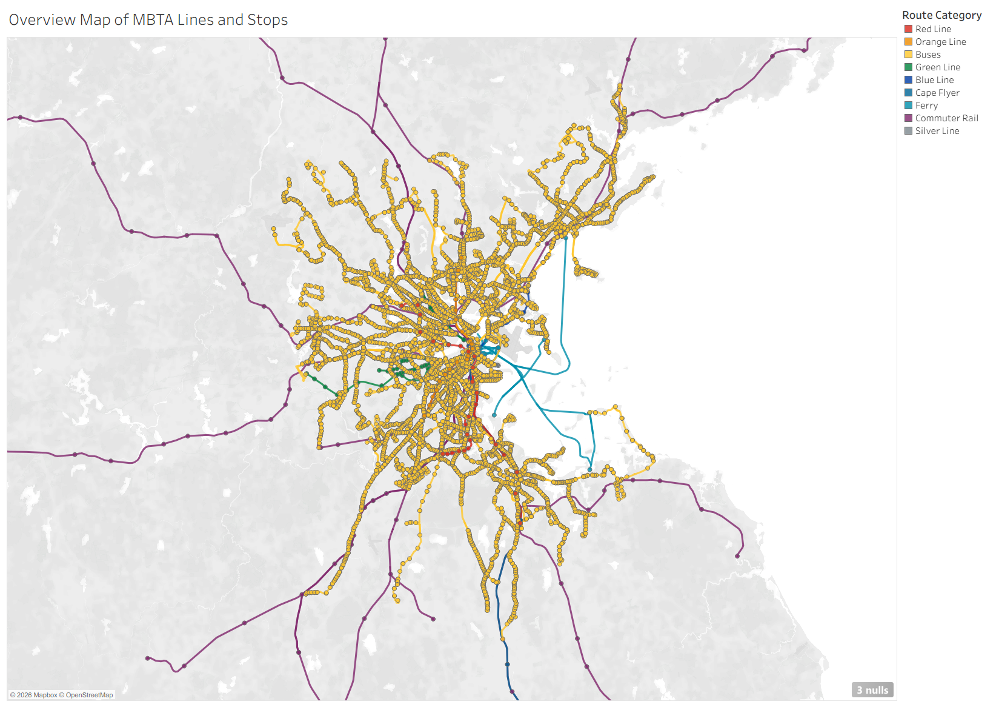
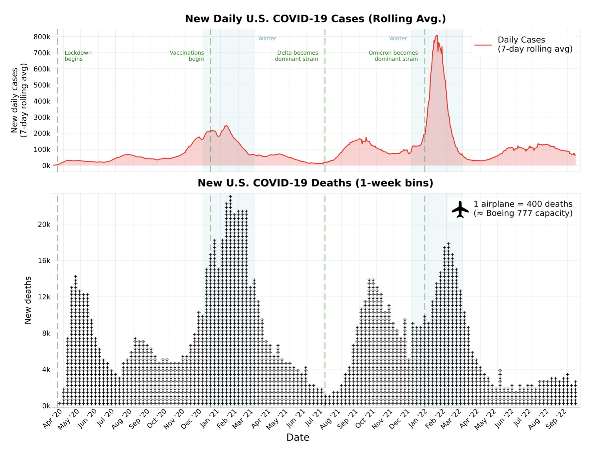
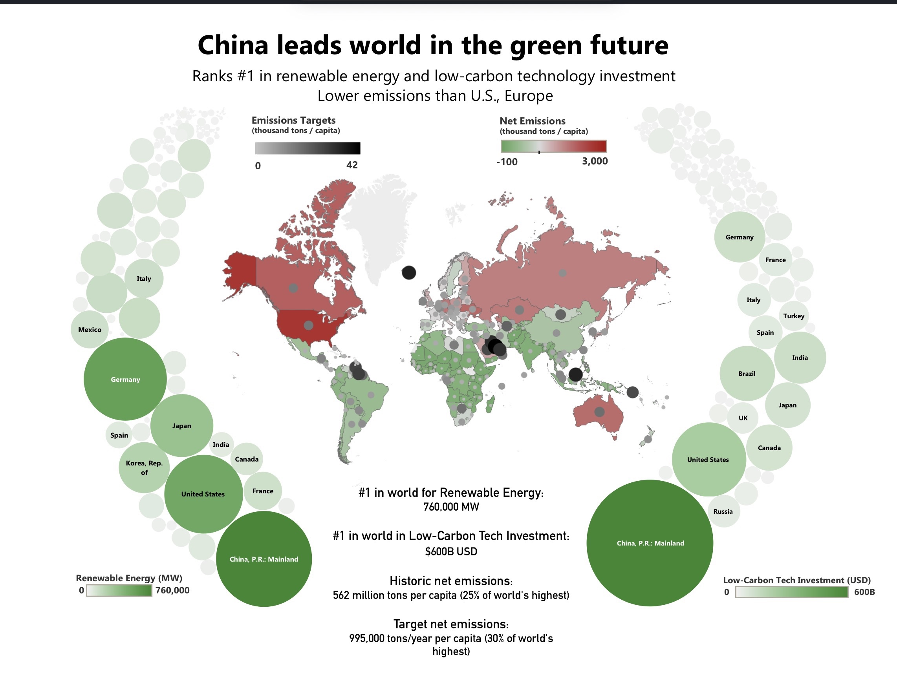

6.C35 A2 - Exploratory Data Analysis

In this assignment, I performed an exploratory data analysis of the MBTA system to answer questions about the coverage and utility of the system.

In this assignment, I performed an exploratory data analysis of the MBTA system to answer questions about the coverage and utility of the system.

In this assignment, I critiqued and redesigned a visualization of COVID-19 cases and deaths over time.

In this assignment, I explore the IMF climate dataset and create two opposing visualizations protraying opposite arguments.
Doloribus assumenda vitae tenetur pariatur voluptates. Voluptatem nostrum esse officiis odit magni voluptas vel repellat? Consequatur, voluptatum mollitia quaerat perspiciatis assumenda dolore rem reiciendis eaque vero sequi fugiat modi cum.
Dicta, excepturi sed odit repellendus corrupti recusandae maxime molestiae ipsa facere pariatur cupiditate doloribus voluptate deserunt animi minus quas nemo officia similique illo alias ducimus fugit architecto debitis iusto. Debitis!
Itaque, cupiditate excepturi, sit aperiam animi recusandae enim quae earum dolorem voluptas ullam similique. Dolore amet facere, accusantium quibusdam deleniti earum, voluptatibus neque vel error numquam cumque, enim quis officiis!
Ducimus, repellat accusamus? Repellendus fugiat modi quibusdam esse. Quia expedita vel doloribus? Commodi eum optio, atque earum voluptate iste at? Velit quas explicabo doloremque commodi minima impedit incidunt delectus eos.
Rerum iure molestias accusamus illum? Esse similique adipisci ex aspernatur voluptatum ut illo incidunt nobis a quas suscipit praesentium, nihil minima corporis accusantium? Voluptatibus reprehenderit cumque nemo nam iusto minus?
Quod totam cupiditate aut magni corporis consectetur velit aliquid porro aliquam repellendus cumque odit, itaque accusantium atque excepturi error voluptates tenetur dolorum minus. Nulla cum officia, sint eum excepturi voluptas!
Quidem soluta minima vitae saepe suscipit animi nihil deleniti, voluptatibus sint distinctio nesciunt possimus voluptas cum aliquid ipsam impedit cumque nulla nostrum nisi ipsa. Odio a aliquam autem ipsum fugit.
Fugit expedita quos asperiores laborum distinctio veniam tempore dolor aspernatur optio facere doloribus saepe ex, explicabo hic repellat rerum ducimus culpa ipsam dolores velit et? Odit excepturi fugit illo dolorem?
Repellat a fugiat numquam iure et omnis rem deserunt, officiis quia id voluptatibus temporibus accusantium laboriosam magnam veritatis distinctio autem, sed quaerat eos nulla ratione. Cumque rerum aperiam commodi sint.